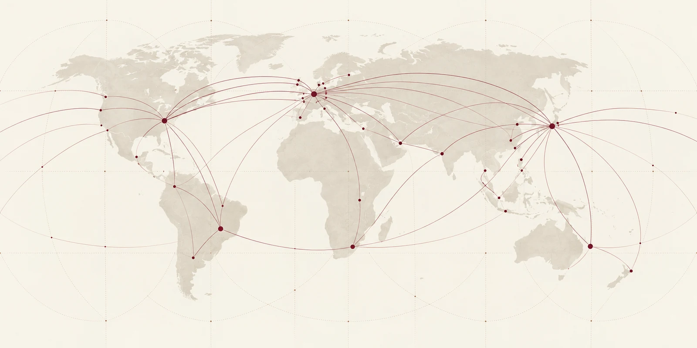

穿越噪音，
市場重新
尋找韌性
通脹數據降溫與企業盈利韌性支持全球股市延續升勢，市場相信增長可與逐步降低的利率並存。波動率有所下降，但地緣政治、財政路徑與 AI 投資節奏仍是焦點。
閱讀完整分析 →以獨立視角理解一個連結更緊密、
競爭更激烈，也更具深遠影響的世界。
主要指數、貨幣與大宗商品
通脹數據降溫與企業盈利韌性支持全球股市延續升勢，市場相信增長可與逐步降低的利率並存。波動率有所下降，但地緣政治、財政路徑與 AI 投資節奏仍是焦點。
閱讀完整分析 →企業盈利韌性與 AI 投資動能支持市場在過去 12 個月持續上行。
人工智能不只是效率工具。它正在重塑資本配置、風險理解與機會發現的方式。我們看到三個將定義下一代金融的長期變化。
AI 正在拓展投資者看見、理解與建設未來的邊界。
從資料室到交易模型，AI 正在縮短從資訊到信念的距離。
AI 代理掃描全球資料與財報，將分散的訊號綜合為更早的洞察。
機器學習改善情境分析、壓力測試與即時風險監測。
資本正以新的活力跨越地區與資產類別。儘管短期仍有不確定性，長期機會依然廣泛且遍布全球。
查看更多市場洞見 →
聚焦市場、創新與全球變革交匯處的原創研究。
截至 2026.09.13 | 價格可能延遲 15 分鐘 | 僅供參考